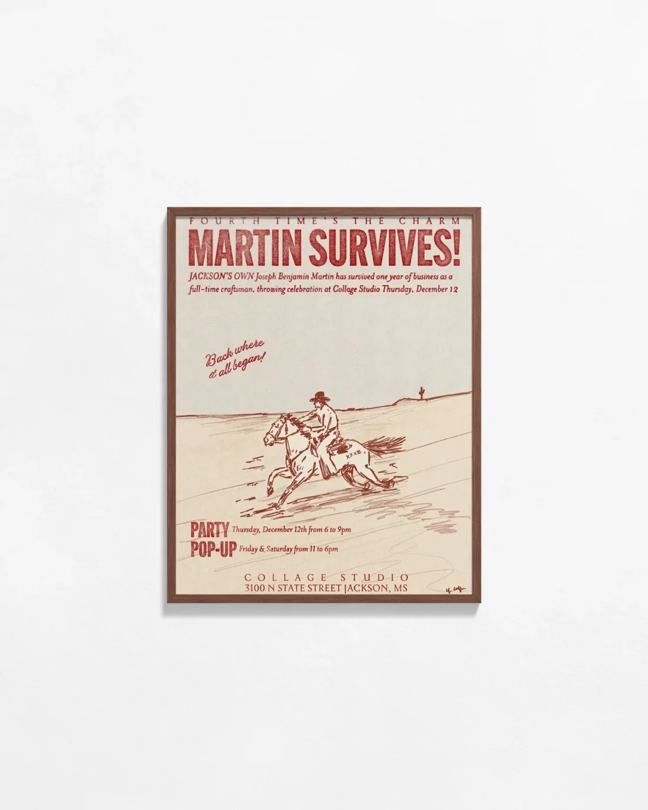

Hatmaker1200 Villa Place, Nashville, TennesseeCommissions by waitlist
JosephMartin
Photograph to come · frontispieceJoseph at the bench on Villa Place, eye level. A hat in his hands, the charm on its band catching the window light.
JM·P·001Joseph MartinTo photograph
Western hats and dress fedoras, made by hand from start to finish in a shop on Villa Place, Nashville.
- Ready-to-wearShips now
- Made to orderNamed designs
- CustomFrom $595
- Caps & teesFrom $45
The hats
Each hat has its own felt and its own charm. What the listing documents is drawn solid. What we have not seen is dashed.
Caps & tees
Cowboy George already lives here, on the trucker and the tee. He keeps that job: the mascot, not the maker’s mark.
Names and prices from the search-index snapshot, 23 Nov 2026 · photographs are on the current shop · confirm stock
Around the work
Real posters and the club. Supporting, never in front of the hats.


The strongest pieces, kept as the work happens.
The archiveHave one made
Commissions are currently taken from a waitlist.
Any colour, any shape, any detail, and the charm chosen with Joseph.
- Custom fur felt
- $1,395, all-inclusive
- Custom straw
- $595–$1,150
- Time
- 4–6 weeks*
- Where
- Villa Place, or remotely